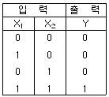
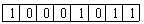
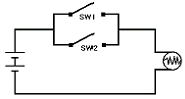
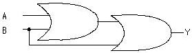
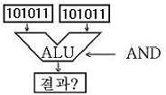
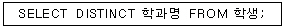
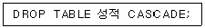
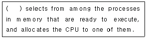
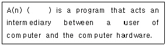

정보처리기능사 (2008-07-13 기출문제)
1과목: 전자 계산기 일반
1. 일반적으로 digital type 의 양을 바르게 표현한 것은?
- 시간의 흐름
- 연필의 갯수
- 온도의 변화
- 식물의 성장
(정답률: 74%)

2. 입력단자와 출력단자가 반대가 되는 즉 “0” 이면 “1”, “1” 이면 “0”이 되는 것은?
- AND
- NOT
- OR
- Flip-Flop
(정답률: 82%)
3. 다른 모든 플립플롭의 기능을 대용할 수 있으며 응용범위가 넓고 집적회로화 되어, 가장 널리 사용되는 플립플롭은?
- RS 플립플롭
- JK 플립플롭
- D 플립플롭
- T 플립플롭
(정답률: 74%)
4. 16진수 FF를 10진수로 나타내면?
- 254
- 255
- 256
- 257
(정답률: 66%)
5. 하나의 명령어가 2개의 오퍼랜드를 가지고 있으며, 처리할 데이터를 제 1, 제 2 오퍼랜드에 기억시키고 그 처리 결과를 제 1오퍼랜드에 기억시키므로 제 1오퍼랜드로 표시된 장소에 기억되어 있던 내용은 처리후에 지워지게 되는 명령의 형식은?
- 1 어드레스(Address) 방식
- 2 어드레스(Address) 방식
- 3 어드레스(Address) 방식
- 2 메모리(Memory) 방식
(정답률: 66%)
6. 원판형의 자기디스크 장치에서 하나의 원으로 구성된 기억공간으로, 원판형을 따라 동심원으로 나눈 것은?
- 헤드(Head)
- 릴(Reel)
- 실린더(Cylinder)
- 트랙(Track)
(정답률: 75%)
7. 2진수 10110을 1의 보수(1'complement)로 표현한 것은?
- 11110
- 01000
- 00110
- 01001
(정답률: 86%)
8. 다음 진리표와 같이 연산이 행해지는 게이트는?

- OR
- AND
- NAND
- XOR
(정답률: 84%)
9. 8bit 컴퓨터에서 부호화 절대치 방식으로 수치 자료를 표현했을 때, 기억된 값은 얼마인가?

- -11
- -12
- 11
- 12
(정답률: 71%)
10. 불대수(Boolean algebra)의 정리 중 틀린 것은?
- A+A=A
- A·A'=0
- A+A'=1
- A+0=0
(정답률: 74%)
11. 그림의 전기회로를 컴퓨터의 논리회로로 치환하면?

- AND
- OR
- NOT
- NAND
(정답률: 81%)
12. 다음의 논리회로에 맞는 불 대수식은?(A, B는 입력, Y는 출력)

- Y=A·B
- Y=A +B
- Y=A · (A B)
- Y=(A+B) · B
(정답률: 55%)
13. 2진수로 부여된 주소값이 직접 기억장치의 피연산자가 위치한 곳을 지정하는 주소 지정 방법은?
- 즉시주소지정(Immediate Addressing)
- 직접주소지정(Direct Addressing)
- 간접주소지정(Indirect Addressing)
- 인덱스주소지정(Index Addressing)
(정답률: 68%)
14. 연산에 사용되는 데이터 및 연산의 중간 결과를 레지스터에 저장하는 주된 이유는?
- 비용 절약을 위하여
- 연산 속도의 향상을 위하여
- 기억 장소의 절약을 위하여
- 연산의 정확도를 높이기 위하여
(정답률: 69%)
15. 제어논리 장치(CLU)와 산술논리연산 장치(ALU)의 실행순서를 제어하기 위해 사용되는 레지스터는?
- 누산기(accumulator)
- 프로그램 상태 워드(Program Status Word)
- 명령 레지스터(instruction register)
- 플래그 레지스터(flag register)
(정답률: 55%)
16. 전송속도는 느리지만 동시에 많은 채널이 동작 되도록 하며 하나의 입·출력 채널을 이용하여 시분할 방식으로 다수의 장치에서 데이터의 전송을 동시에 수행하도록 하는 채널은?
- 셀렉터 채널
- 멀티플렉서 채널
- 입력 채널
- 출력 채널
(정답률: 86%)
17. 일반적으로 컴퓨터의 CPU에서 하나의 명령어를 실행하기 위하여 이루어지는 동작 단계를 바르게 나열한 것은?
- fetch cycle → instruction decoding cycle → write-back 작업 → 명령어 실행단계
- fetch cycle → instruction decoding cycle → 명령어 실행단계 → write-back 작업
- fetch cycle → write-back 작업 → 명령어 실행단계 → instruction decoding cycle
- instruction decoding cycle → fetch cycle → 명령어 실행단계 → write-back 작업
(정답률: 63%)
18. 다음 그림에서 ALU 로 2개의 값이 입력되었을 때 AND 연산 후의 값으로 맞는 것은?

- 010100
- 001011
- 101011
- 111111
(정답률: 80%)
19. 레지스터 중 PC(Program Counter)를 바르게 설명한 것은?
- 현재 실행 중인 명령어의 내용을 기억한다.
- 다음에 수행할 명령어의 번지를 기억한다.
- 기억 장소의 내용을 기억한다.
- 연산의 결과를 일시적으로 보관한다.
(정답률: 77%)
20. 기억장소인 스택(Stack)에 데이터를 저장하기 위해 사용되는 것은?
- pull
- pop
- push
- move
(정답률: 58%)
2과목: 패키지 활용
21. 다음 SQL 검색문의 의미로 가장 적절한 것은?

- 학생 테이블의 학과명을 모두 검색하라.
- 학생 테이블의 학과명을 중복되지 않게 모두 검색하라.
- 학생 테이블의 학과명 중에서 중복된 학과명은 모두 검색하라.
- 학생 테이블을 학과명 구별하지 말고 모두 검색하라.
(정답률: 76%)
22. 데이터베이스 개체(Entity)의 속성 중 하나의 속성이 가질 수 있는 모든 값의 집합을 무엇이라고 하는가?
- 객체(Object)
- 속성(Attribute)
- 도메인(Domain)
- 카디널리티(Cardinality)
(정답률: 80%)
23. SQL의 데이터 조작문(DML)에 해당하지 않는 것은?
- UPDATE
- DROP
- INSERT
- SELECT
(정답률: 70%)
24. 데이터베이스 구성 요소들의 상호 관계를 논리적으로 정의한 것으로, 데이터의 구조와 제약 조건에 대해 기술한 것은?
- 차수
- 트랜잭션
- 스키마
- 튜플
(정답률: 66%)
25. DBMS의 필수기능으로 가장 적절한 것은?
- 정의기능, 조작기능, 제어기능
- 예비기능, 회복기능, 조작기능
- 참조기능, 보안기능, 저장기능
- 보안기능, 병행제어기능, 검증기능
(정답률: 87%)
26. 하나 이상의 기본 테이블로부터 유도되어 만들어지는 가상 테이블을 무엇이라 하는가?
- 뷰(VIEW)
- 유리창(WINDOW)
- 테이블(TABLE)
- 도메인(DOMAIN)
(정답률: 79%)
27. 스프레드시트의 기능 중 조건에 맞는 내용만 선별하여 추출하는 기능은?
- 정렬
- 필터
- 슬라이드 쇼
- 매크로
(정답률: 85%)
28. 프레젠테이션에서 사용하는 하나의 화면을 무엇이라 하는가?
- 슬라이드
- 매크로
- 개체
- 셀
(정답률: 86%)
29. 다음 SQL 명령문의 의미로 가장 적절한 것은?

- 성적 테이블과 이 테이블을 참조하는 다른 테이블도 함께 제거하시오.
- 성적 테이블이 다른 테이블에 의해 참조 중이면 제거하지 마시오.
- 성적 테이블만 제거 하시오.
- 성적 테이블의 인덱스만 제거하시오.
(정답률: 63%)
30. 스프레드시트 작업에서 반복적으로 실행하는 경우에 한 번의 명령으로 자동화시켜 처리하는 기능은?
- 필터
- 정렬
- 매크로
- 테이블
(정답률: 86%)
3과목: PC 운영 체제
31. 시스템 프로그램을 디스크로부터 주기억장치로 읽어 내어 컴퓨터를 이용할수 있는 상태로 만들어 주는 과정은?
- 부팅(booting)
- 스케줄링(schdeuling)
- 업데이트(update)
- 데드락(deadlock)
(정답률: 75%)
32. 도스(MS-DOS)명령어에 관한 설명 중 옳지 않은 것은?
- CLS : 화면을 깨끗이 지운다.
- MD : 새로운 디렉토리를 만든다.
- CD : 현재의 디렉토리를 변경한다.
- FC : 모든 열려 있는 파일을 닫는다.
(정답률: 68%)
33. “윈도 98”에서 도스창을 열어 작업한 후, 다시 윈도로 복귀하고자 할 때 도스창을 종료하는 방법은?
- “ESC"를 누른다.
- “ALT"+"F4"
- “CTRL"+"ENTER"를 누른다.
- “EXIT" 명령어를 입력하고 ”ENTER"를 누른다.
(정답률: 60%)
34. 주기억장치의 용량을 실제보다 크게 활용할 수 있도록 하기 위하여 실제 자료를 보조기억장치에 두고 주기억장치에 있는 것과 같이 처리 시킬 수 있는 기억장치는?
- 가상 기억장치
- 확장 기억장치
- 캐시 기억장치
- 기본 기억장치
(정답률: 60%)
35. UNIX 시스템이 제공하는 편집기 만으로 묶어진 것은?
- ed, vi
- cat, get
- cp, shell
- pe2, edit
(정답률: 75%)
36. A 드라이브의 디스켓을 빠른 포맷하고 시스템 파일을 복사하기 위한 DOS 명령은?
- format a: /f
- format a: /s
- format a: /q
- format a: /q /s
(정답률: 50%)
37. “윈도 98의 시스템 도구 중 디스크의 손상된 부분을 점검하여 복구해 주는 것은?
- 디스크 검사
- 디스크 조각 모음
- 디스크 공간 늘림
- 디스크 압축
(정답률: 60%)
38. UNIX에서 프롬프트가 % 라면 사용자가 사용하고 있는 쉘의 종류는?
- c shell
- korn shell
- system shell
- com shell
(정답률: 60%)
39. “윈도 98” 의 시작버튼 위에서 마우스의 오른쪽 버튼을 눌렀을때 나타나는 메뉴가 아닌 것은?
- 열기
- 탐색
- 설정
- 찾기
(정답률: 54%)
40. “윈도 98”에서 지워진 파일이 임시로 보관되는 곳은?
- 휴지통
- 내 문서
- 내 컴퓨터
- 내 서류가방
(정답률: 85%)
41. UNIX에서 명령어 mv 의 기능으로 옳은 것은?
- 파일의 이름을 바꾼다.
- 파일을 복구한다.
- 파일목록을 열거한다.
- 파일을 화면에 출력한다.
(정답률: 52%)
42. “윈도 98”에 대한 설명으로 옳지 않은 것은?
- 데이터를 한 번에 16비트 단위로 처리한다.
- Plug and Play 기능을 지원한다.
- 네트워크와 인터넷을 지원한다.
- 멀티태스킹(Multi-tasking)을 지원한다.
(정답률: 79%)
43. 다음 문장의 ( )안에 알맞은 내용은?

- Cycle
- Spooler
- Buffer
- Scheduler
(정답률: 50%)
44. CPU 스케줄링 알고리즘에서 규정시간 또는 시간조각(slice)을 미리 정의하여 CPU 스케줄러가 준비상태 큐에서 정의된 시간만큼 각 프로세스에 CPU를 제공하는 시분할 시스템에 적절한 스케줄링 알고리즘은?
- RR(round-robin)
- FCFS(first-come-first-served)
- SJF(shortest job first)
- SRT(shortest remaining time)
(정답률: 54%)
45. 다음 괄호 안에 가장 알맞은 단어는?

- operating system
- GUI
- interpreter
- file system
(정답률: 74%)
46. 시스템의 날짜를 변경하거나, 확인할 수 있는 DOS 명령어는?
- CD
- DATE
- CLS
- COPY
(정답률: 78%)
47. "윈도 98“에서 클립보드에 관한 설명 중 옳지 않은 것은?
- 다른 프로그램의 정보도 가져오거나 보낼 수 있다.
- 한 번에 한 가지의 정보만 저장할 수 있다.
- 제일 마지막에 들어온 정보를 기억하고 있다.
- 선정된 대상을 클립보드에 복사하는 기능키는 Shift+X이다.
(정답률: 69%)
48. “윈도 98” [탐색기]의 [보기] 메뉴에서 아이콘 표시 방식으로 적당하지 않는 것은?
- 자세히
- 큰 아이콘
- 그룹 정렬
- 간단히
(정답률: 55%)
49. UNIX 시스템이 이식성이 높은 가장 큰 이유는?
- C 언어로 구성되어 있기 때문에
- Cobol 언어로 구성되어 있기 때문에
- Basic 언어로 구성되어 있기 때문에
- Fortran 언어로 구성되어 있기 때문에
(정답률: 81%)
50. 도스(MS-DOS)의 필터(Filter)명령어 중 하나 또는 여러 개의 파일에서 특정한 문자열을 검색하는 명령어는?
- FIND
- MORE
- SORT
- SEARCH
(정답률: 63%)
4과목: 정보 통신 일반
51. 다음 중 모뎀을 단말기에 접속할 때 사용하는 방식은?
- TTL 접속방식
- 와이어 접속방식
- 선로스위칭방식
- RS-232C 접속방식
(정답률: 60%)
52. PCM 통신에서 송신측 변조과정이 아닌 것은?
- 양자화
- 부호화
- 표본화
- 복호화
(정답률: 61%)
53. 신호의 변조속도가 1600[Baud]이고, 트리비트(tribit)인 경우 전송속도[bps]는?
- 2400 Bps
- 9200 Bps
- 4800 Bps
- 3200 Bps
(정답률: 73%)
54. 다음 중 공중데이터 통신망을 통하여 순간적으로 대량의 패킷 데이터를 전송하는데 가장 적합한 것은?
- 메시지교환
- 회선교환
- 시분할교환
- 패킷교환
(정답률: 58%)
55. 다음 중 각 통화로에 여러 반송주파수를 할당하여 동시에 많은 통화로를 구성하는 방식은?
- 시분할 방식
- 공간분할 방식
- 온라인 방식
- 주파수분할 방식
(정답률: 61%)
56. 다음 중 LAN의 네트워크 형태와 가장 관계가 먼 것은?
- 스타(star)형
- 링(ring)형
- 버스(bus)형
- 그물(mesh)형
(정답률: 50%)
57. 두 지점간을 직통 회선으로 연결한 회선방식으로 트래픽이 많은 경우에 가장 적합한 방식은?
- 분기회선방식
- 전용회선방식
- 루프회선방식
- 교환회선방식
(정답률: 48%)
58. OSI 7계층 참조모델 중 논리적 링크라고 불리는 가상회로와 관련 있는 것은?
- 데이터링크계층
- 네트워크계층
- 응용계층
- 세션계층
(정답률: 32%)
59. 다음 중 정지위성의 위치는 지구 적도 상공 약 몇 [km]인가?
- 25000
- 36000
- 45000
- 56000
(정답률: 71%)
60. 다음 중 데이터 통신의 에러제어 방식에 속하지 않는 것은?
- 반향검사
- 검출후 재전송
- 전진에러수정
- 자동송출제어
(정답률: 36%)